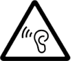
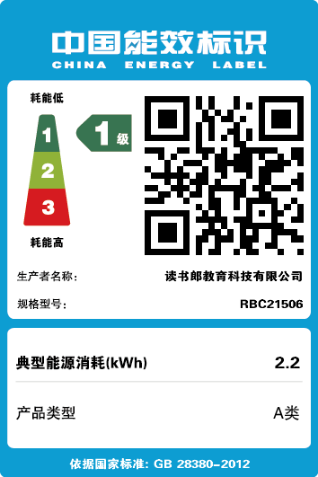

学生平板C70 Pro使用说明书
安全事项
在使用本设备前，请先阅读所有安全信息以确保正确和安全使用。
-
拆卸或改造
本机由高精密元器件组成，禁止用户自行拆卸。如本机出现故障时，请及时送往所在地区的售后服务部进行维护。
-
防水
本机不具备防水性，注意防潮、防水，若不慎进水，请勿开机。请勿用任何高腐蚀性液体清洗本机部件，清洗请用中性清洁剂和柔软清洁布。
-
禁摔禁压禁划
请避免本机从高处摔跌或受压力过大，勿用尖锐物品接触液晶显示屏，以免划伤液晶显示屏。
-
存放
请勿在高温、高压、强静电、强磁场或灰尘大的环境中使用或存放、震动机器，以免损坏机器。
请勿在室外使用，以避免受热、燃烧或电冲击。
-
电池及充电方法
本机使用锂聚合电池。当屏幕显示暗淡或有低电提示时，请及时为本机电池充电，电池充满后显示屏上电池电量图标显示为满格。充电时请将接通电源的充电器插入本机的电源插孔进行充电。如果电池更换不当会有爆炸危险，只能用同样类型或等效类型的电池来更换。
-
充电注意
因使用其它电源适配器而非本机附送的电源适配器而导致的产品损坏，厂家概不负责。建议在10℃以上的正常环境温度下充电。
请勿将电源线放置在人们经常出入的地方。
请勿在室外使用，以避免受热、燃烧或电冲击。
请勿将潮湿的手触摸电源适配器，或将其浸于水或其它液体中。
请勿将本机的电源适配器用于其它电器设备，以避免电冲击、燃烧或器件的损坏。
- 为避免损坏电池，请勿在短时间内重复插拔充电插头，请勿随意使用非本机专用的电源适配器充电；为防止电池因过放而损坏，建议您在本机长期放置不用之前，先给电池充电，且确保电池电量不低于60%为准。
-
如果电池更换不当会有爆炸危险，只能用同样类型或等效类型的电池来更换。
电池（电池包和组合电池）不得暴露在诸如日照、火烤或类似过热环境中。
用错误型号电池更换会有爆炸危险，务必按照说明处置用完的电池。
由于电源插头是作为切断本机的主要电源，请将本机连接至容易触及的交流电插座。请勿随意拆卸。
本设备不得遭受水滴或溅水，且设备上不得放置诸如花瓶一类的装满液体的物品。
本产品在破坏后可能产生小型部件，请在家长陪同及指导下使用。如不慎误食，请及时就医。
-
安全警示
本设备的操作系统支持官方的系统的更新。系统更新包必须从官方渠道下载，若由于使用其他非官方渠道下载的更新包升级，导致机器故障，本公司概不负责。
为避免听力受损，请勿长时间使用高音量。
产品介绍
机器部件介绍
按键说明
开机、关机、休眠
- 开机：关机状态下，长按键可开机。
- 关机：开机状态下，长按键弹出选项菜单，选择“关机”，出现关机画面。
- 休眠：开机状态下，按下键进入休眠状态，再次按下键点亮屏幕。
触摸屏操作
机器的功能操作都可以通过触摸/点击相应的图标来完成。
文件下载说明
- 用USB连接线将本机跟电脑正常连接；
- 用户可以在电脑上管理本机中的资料，即复制或删除操作；
- 你可以登陆读书郎网址（https://www.readboy.com）下载所需要的资料。
系统升级
- 升级是指更新、优化、提升、拓展所进行的系统程序、数据或内核，即使系统升级失败，也能再次进行系统升级。
- 确保电池电量充足，电源、稳定供给：升级时请务必通过充电器接上本机，直接使用外接电源供电升级。为避免升级过程中，机器中的资料丢失，建议用户在升级前先将本地磁盘中的资料备份到电脑上，升级完成后再将备份资料拷贝到本机中。
- 若无法升级或修复机器，请联系当地经销商或拨打公司售后服务热线：400-8325-888
附录
随机配件
| 名称 | 数量 | 名称 | 数量 |
| 读书郎学生平板C70 Pro | 1台 | 快速入门指南 | 1份 |
| 电源适配器 | 1个 | USB数据线 | 1根 |
规格参数
| 性能指标 | 参数 | 性能指标 | 参数 |
| 认证型号 | 网络 | 双频Wi-Fi+蓝牙 | |
| 主屏参数 | 12.35英寸，2560x1600分辨率 | 外型尺寸 | 287.5×185.7×8.5(mm) |
| 电源 | 5V2A | 翻转摄像头 | 2×1200万像素（2400万感光单元）双核摄像头 |
| 电池容量 | 内存 |
简易故障排除
无法开机
检查电量是否充足，电量不足时请及时为电池充电。检查是否按错了开机键。
自动关机
检查电量是否充足，电量不足时请及时为电池充电。
死机
屏幕无显示，或有显示但任何操作无效，通过长按电源键重开机或重新升级机器。
LCD黑屏
检查机器是否处于关机状态，关机状态下请重新开机。检查电池电量是否不足，电量不足时请及时为电池充电。
电池使用时间过短
检查电池电量是否充满，电量不足时请及时为电池充电。
检查内置喇叭声音是否过大，导致耗电严重，按音量加减键对系统音量进行调整。
无法录音
检查存储空间是否足够，若存储空间已满，录音过程中将自动停止。
检查电量是否充足，电量不足时请及时为电池充电。
按键失效
长按电源键重开机。
检查电池电量是否充足，电量不足时请及时为电池充电。
屏幕亮度较暗
检查电池电量是否不足，电池不足时请及时为电池充电。
可进入”设置—显示—亮度“中进行屏幕亮度设置。
文件打开出错
请检查您机器的剩余空间是否足够。
检查您打开的文件是否符合下载文件要求，是否属于本机的专用下载资料。
单词无发音或播放音乐无声
检查耳机与本机接触是否良好，耳机线是否有损坏。
单词本身无对应发音。
检查文件是否为本机支持的视频音频文件。
检查单词或音乐量是否调至为0，按音量加减键对系统音量进行调整。
电子信息产品环保标识说明
有毒有害物质或元素的名称及含量说明
若要了解此产品的有毒有害物质或元素的名称及含量说明，请参照以下表格及说明。
| 部件名称 | 有毒物质或元素 | |||||
| 铅（Pb） | 镉（Cd） | 汞（Hg） | 六价铬 （Cr（VI）） |
多溴联苯 （PBB） |
多溴二苯醚 （PBDE） |
|
| 印刷电路板及其电子组件 | Χ | Ο | Ο | Ο | Ο | Ο |
| 外部信号连接头及线材 | Ο | Ο | Ο | Ο | Ο | Ο |
| 五金件 | Ο | Ο | Ο | Ο | Ο | Ο |
| 油漆/镀层 | Ο | Ο | Ο | Ο | Ο | Ο |
| 组装配件 | Ο | Ο | Ο | Ο | Ο | Ο |
|
本表格依据SJ/T 11364的规定编制
Ο：表示该有害物质在该部件所有材质材料中的含量均在GB/T26572规定的限量要求以下。 Χ：表示该有害物质至少在该部件的某一均值材料中的含量超出GB/T26572规定的限量要求。 注：本产品标有“Χ”的原因是现阶段暂无可供选择的替代技术或部件。 本产品的“环保使用期限”为10年。电池等可更换部件的环保使用期限可能与产品的环保期限不同。 环保年限指本手册所述的正常使用条件下使用产品不产生有毒有害物质泄漏的安全年限。 |
||||||
| 注意 |
|---|
|
液晶屏上的每个像素都有红、绿、蓝三种原色，他们共同组合使得像素产生出各种颜色。以公司9英寸的液晶显示屏为例，其液晶屏面积195.072mm×113.4mm，分辨率为1024×600，每个液晶像素由RGB三原色单元组成。液晶像素就是把液晶倒入固定的模具下形成的“液晶盒”，这样的“液晶盒”在9英寸的液晶显示器上的数量是1024×600×3=184万个。一个“液晶盒”的大小又是多少呢？我们可以简单的计算：高=0.1905mm，宽=0.189/3=0.063mm，也就是说，要在195.072mm×113.4mm的面积下密密麻麻的排列着184万个面积仅为0.1905mm×0.063mm大小的“液晶盒”，而且在液晶盒背后还集成一个单独驱动该液晶盒的驱动管。显然，这种生产工艺对生产线要求是非常高的，以目前的技术和工艺，还不能保证每批生产出来的液晶屏没有亮/坏点。 从技术上来讲，亮/坏点是液晶显示板上不可修复的像素，是在生产过程中产生的。液晶显示板由固定的液晶像素组成，在大小为0.1905mm×0.063mm的液晶像素后面有三个晶体管，对应着红、绿、蓝滤光片，在184万个液晶像素中，其中任何一个晶体管出现毛病即短路都会使这个像素成为一个亮/坏点，所以液晶屏出现一定数量的亮点或暗点是液晶显示屏技术的一种特性，对于任何一个生产厂家，这样的现象都是不可避免的。 液晶屏国家标准是335，即在液晶屏上，三个亮点或者三个暗点，都算合格的，如果亮点加暗点总数不超过五个，也是合格的，厂商将不予退货。 |
能效标识

读书郎产品维修记录
| 送 修 日 期 | 故 障 描 述 ／ 故 障 原 因 / 处 理 结 果 |
使 用 备 件 | 交 验 日 期 | 维 修 中 心 名 称 ／ 维 修 人 员 签 字 |
|---|---|---|---|---|
-
送 修 和 取 机 注 意 事 项
1 、当 您 在 接 受 服 务 时 ， 提 供 真 实 有 效 的 联 络 信 息 ， 以 便 我 们 为 您 提 供 更 加 方 便 的 服 务 。
2 、请 您 在 送 修 机 器 前 ， 将 您 储 存 的 所 有 信 息 和 数 据 自 行 备 份 ， 以 免 在 检 测 、 维 修 过 程 中 遗 失 、 损 坏 和 泄 露 。 请 您 保 证 您 存 储 的 信 息 和 数 据 的 合 法 性 。 为 尊 重 您 的 隐 私 （ 除 非 为 提 供 服 务 所 必 须 ） ， 我 们 将 不 对 您 的 信 息 和 数 据 进 行 传 输 、 备 份 和 审 查 ， 但 保 留 对 违 法 内 容 拒 绝 服 务 的 权 力 。
3 、请 您 凭 “ 读 书 郎 产 品 保 修 卡 " 取 机 ， 如 果 您 不 慎 遗 失 相 关 凭 证 ， 须 持 本 人 身 份 证 或 有 效 证 明 到 送 修 处 办 理 挂 失 手 续 ， 7 日 后 可 取 机 。
客 户 服 务 热 线 ： 400-8325-888
-
服 务 政 策
读 书 郎 严 格 根 据 1995 年 8 月 25 日 颁 布 的 《 部 分 商 品 修 理 更 换 退 货 责 任 规 定 》 ， 为 您 的 商 品 提 供 全 面 三 包 服 务 。
详 细 的 服 务 政 策， 请 参 考 读 书 郎 官 网 - 服 务 - 服 务 支 持 栏 内 容 ：https://www.readboy.com
- 请 扫 描 二 维 码 ， 关 注 公 众 号 -服 务 获 取 附 近 销 售 网 点 和 售 后 服 务 信 息
读书郎产品保修卡
为 了 给 您 提 供 更 好 的 售 后 服 务 ， 保 障 您 的 合 法 权 益 ， 请 优 先 完 成 电 子 保 卡 填 写 。
用 户 资 料- 用 户 姓 名：
- 电话：
- 生日：
- QQ：
- 所 在 学 校 ：
- 年级：
店员填写
- 购 买 日 期 ：
- 机 型 / 颜 色 ：
- 区 域 编 码 ：
- 售 后 电 话 ：
- 产品标签
- 销售商印章
关于读书郎
若要在学生平板上查看使用手册，请打开：读书郎学生平板，进入“设置-便捷服务-使用说明”。
您可访问 www.readboy.com 了解更多产品信息。
同时欢迎关注读书郎学生平板官方微信
扫描二维码可获得更多便捷服务
制造商：读书郎教育科技有限公司 地址：广东省中山市五桂山长命水工业园
更多帮助可访问：www.readboy.com
本手册仅供参考，具体功能及产品图片可能与实物有细微差别，请以实物为准。